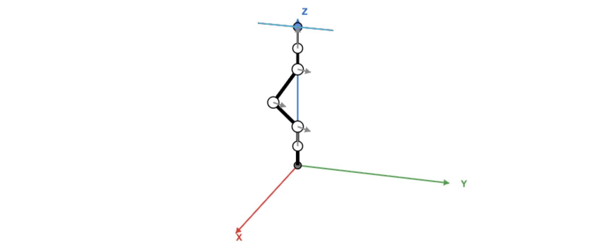
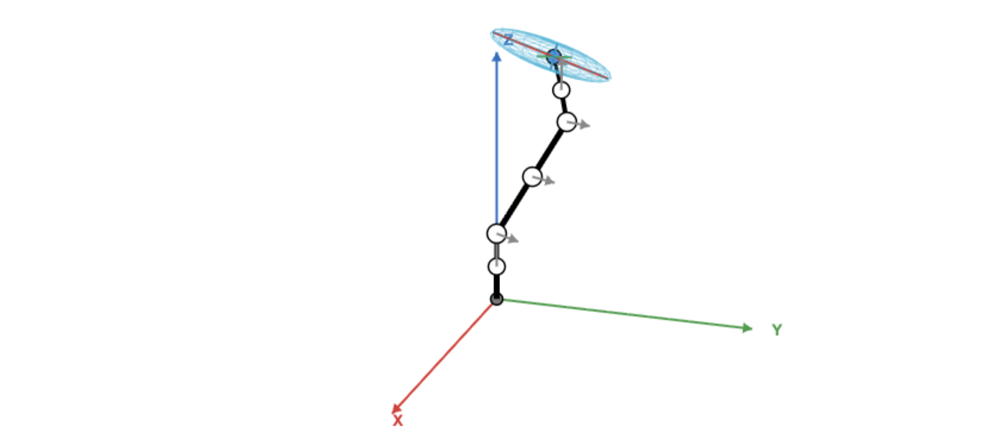
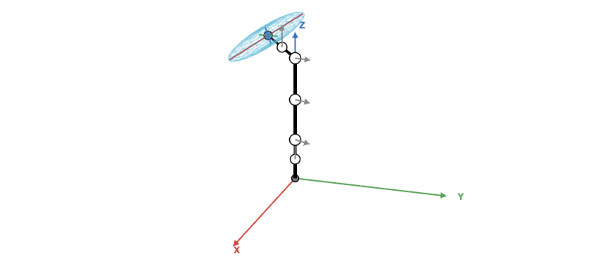

In this post, our goal is to understand some concepts related to Jacobian through visualization.
In this simulation, we introduce a 5-DOF robotic arm with 5 revolute joints. From base to end-effector, the joint axes are defined as yaw (+z) for J1, pitch (+y) for J2, J3, and J4, and yaw (+z) for J5.
The link length between J1 and J2 ($L_1$), as well as between J5 and the end-effector ($L_5$), is set to $1$. The intermediate link lengths ($L_2, L_3, L_4$) between J2–J3, J3–J4, and J4–J5 are each set to $2$.
The world frame represents the fixed origin of the global coordinate system. Here, the space frame is fixed at J1 (coinciding with the world frame origin), and the body frame is attached to the end-effector.
We are interested in transformation from joint space to task space. Forward kinematics is about calculating the robot end-effector frame's position and orientation for a given set of joint positions. $$ \theta \in \mathbb R^n \xrightarrow{\text{Forward Kinematics}} T(\theta) := \begin{bmatrix} R(\theta) & p(\theta) \\ 0 & 1 \end{bmatrix} \in SE(3) $$ where $\theta \in \mathbb R^n$ is a set of joint angles, $R \in SO(3)$, and $p \in \mathbb R^3$. The forward kinematics of $n$-link open chain is as follows: $$ T(\mathbf{\theta}) = e^{[\mathcal S_1]\theta_1} \cdots e^{[\mathcal S_n]\theta_n} M. $$ In this post, we will talk about other transformation form joint space to task space. It is the problem of calculating the twist of the end-effctor of an open chain from a given set of joint positions and velocities. $$ \dot \theta \in \mathbb R^n \xrightarrow[\mathcal V = \textcolor{red}{J(\theta)} \dot \theta]{\text{Velocity Kinematics}} \mathcal V := \begin{bmatrix} \omega \\ v \end{bmatrix} \in se(3) $$ We call this problem velocity kinematics.
The spatial twist is $$ \begin{aligned} \left[ \mathcal{V}_s \right] =& \dot T T^{-1} \\ =& [\mathcal S_1] \dot\theta_1 + e^{[\mathcal S_1]\theta_1}[\mathcal S_2] e^{-[\mathcal S_1]\theta_1}\dot\theta_2 + e^{[\mathcal S_1]\theta_1}e^{[\mathcal S_2]\theta_2} [\mathcal S_2] e^{-[\mathcal S_2]\theta_2} e^{-[\mathcal S_1]\theta_1}\dot\theta_2 + \cdots \end{aligned} $$ or $$ \begin{aligned} \mathcal V_s =& \mathcal S_1 \dot\theta_1 + \text{Ad}_{e^{[\mathcal S_1]\theta_1}}(\mathcal S_2) \dot\theta_2 + \text{Ad}_{e^{[\mathcal S_1]\theta_1} e^{[\mathcal S_2]\theta_2}}(\mathcal S_3) \dot\theta_3 + \cdots \\ =& \begin{bmatrix} J_{s1} & \cdots & J_{sn} \end{bmatrix} \begin{bmatrix} \dot\theta_1 \\ \vdots \\ \dot\theta_2 \\ \end{bmatrix}, \quad \text{where }\quad J_{si}(\theta)=\begin{cases} \mathcal S_i, & i = 1, \\ \text{Ad}_{e^{[\mathcal S_1]}\theta_1 \dots e^{[\mathcal S_{i-1}]\theta_{i-1}}}(\mathcal S_i), & i = 2, \dots, n. \\ \end{cases} \end{aligned} $$ From these equations, we see that the spatial twist is the image of the joint velocity $\dot{\theta}$ under a linear transformation (represented by a matrix). We are interested in the simple matrix. Now, we define it.
Let's calculate the spatial Jacobain of the given arm.$(i)$ $$ J_{s1}(\theta) = \mathcal S_1 = \begin{bmatrix} \omega_1 \\ v_1 \\ \end{bmatrix} = \begin{bmatrix} \omega_z \\ -\omega_z \times q_1 \end{bmatrix} = \begin{bmatrix} 0 & 0 & 1 & 0 & 0 & 0 \end{bmatrix}^\top. $$ where the unit axis of rotation $\omega_1 = \begin{bmatrix} 0 & 0 & 1 \end{bmatrix}^\top$ and an point on the joint axis $q_1 = \begin{bmatrix} 0 & 0 & 0 \end{bmatrix}^\top.$
$(ii)$ $$ \mathcal S_2 = \begin{bmatrix} 0 & 1 & 0 & -L_1 & 0 & 0 \end{bmatrix}^\top. $$ where $\omega_2 = \begin{bmatrix} 0 & 1 & 0 \end{bmatrix}^\top$ and $q_2 = \begin{bmatrix} 0 & 0 & L_1 \end{bmatrix}^\top.$ Since J1 rotates about the Z-axis, the homogeneous transformation matrix for J1 is given by $$ e^{[\mathcal S_1] \theta_1}= T_{01}(\theta_1) = \begin{bmatrix} R_z(\theta_1) & p_1 \\ \mathbf{0}_{1\times 3} & 1 \end{bmatrix} = \begin{bmatrix} \cos\theta_1 & -\sin\theta_1 & 0 & 0 \\ \sin\theta_1 & \cos\theta_1 & 0 & 0 \\ 0 & 0 & 1 & 0 \\ 0 & 0 & 0 & 1 \end{bmatrix}. $$ where the translation vector $p_1 = \begin{bmatrix} 0 & 0 & 0 \end{bmatrix}^\top$. The adjoint representation for $T_{01}$ is given by $$ [\text{Ad}_{T_{01}}] = \begin{bmatrix} R_z(\theta_1) & \mathbf{0}_{3\times 3} \\ [p_1]R_z(\theta_1) & R_z(\theta_1) \end{bmatrix} = \begin{bmatrix} R_z(\theta_1) & \mathbf{0}_{3\times 3} \\ \mathbf{0}_{3\times 3} & R_z(\theta_1) \end{bmatrix}. $$ Therefore, we have $$ J_{s2} = \text{Ad}_{e^{[\mathcal S_1]\theta_1}}(\mathcal S_2) = \begin{bmatrix} \cos\theta_1 & -\sin\theta_1 & 0 & 0 & 0 & 0 \\ \sin\theta_1 & \cos\theta_1 & 0 & 0 & 0 & 0 \\ 0 & 0 & 1 & 0 & 0 & 0 \\ 0 & 0 & 0 & \cos\theta_1 & -\sin\theta_1 & 0 \\ 0 & 0 & 0 & \sin\theta_1 & \cos\theta_1 & 0 \\ 0 & 0 & 0 & 0 & 0 & 1 \end{bmatrix} \begin{bmatrix} 0 \\ 1 \\ 0 \\ -L_1 \\ 0 \\ 0 \end{bmatrix} = \begin{bmatrix} -\sin\theta_1 \\ \cos\theta_1 \\ 0 \\ -L_1\cos\theta_1 \\ -L_1\sin\theta_1 \\ 0 \end{bmatrix}. $$
$(iii)$ $$ \mathcal S_3 = \begin{bmatrix} 0 & 1 & 0 & -L_1 & 0 & L_2 \end{bmatrix}^\top. $$ where $\omega_3 = \begin{bmatrix} 0 & 1 & 0 \end{bmatrix}^\top$ and $q_3 = \begin{bmatrix} L_2 & 0 & L_1 \end{bmatrix}^\top.$ Since Joint 2 rotates about the Y-axis, the homogeneous transformation matrix for Joint 2 at the zero position is given by $$ e^{[\mathcal S_2] \theta_2}= T_{12}(\theta_2) = \begin{bmatrix} R_y(\theta_2) & p_2 \\ \mathbf{0}_{1\times 3} & 1 \end{bmatrix} = \begin{bmatrix} \cos\theta_2 & 0 & \sin\theta_2 & 0 \\ 0 & 1 & 0 & 0 \\ -\sin\theta_2 & 0 & \cos\theta_2 & 0 \\ 0 & 0 & 0 & 1 \end{bmatrix}. $$ where $p_2 = \begin{bmatrix} 0 & 0 & 0 \end{bmatrix}^\top$. The cumulative homogeneous transformation matrix up to Joint 2 is given by $$ T_{02}(\theta_1, \theta_2) = T_{01}(\theta_1) T_{12}(\theta_2) = \begin{bmatrix} R_z(\theta_1)R_y(\theta_2) & \mathbf{0}_{3\times 1} \\ \mathbf{0}_{1\times 3} & 1 \end{bmatrix}. $$ The adjoint representation for $T_{02}$ is given by $$ [\text{Ad}_{T_{02}}] = \begin{bmatrix} R_z(\theta_1)R_y(\theta_2) & \mathbf{0}_{3\times 3} \\ \mathbf{0}_{3\times 3} & R_z(\theta_1)R_y(\theta_2) \end{bmatrix}. $$ Therefore, we have $$ J_{s3} = \text{Ad}_{e^{[\mathcal S_1]\theta_1}e^{[\mathcal S_2]\theta_2}}(\mathcal S_3) = \begin{bmatrix} R_z(\theta_1)R_y(\theta_2) & \mathbf{0}_{3\times 3} \\ \mathbf{0}_{3\times 3} & R_z(\theta_1)R_y(\theta_2) \end{bmatrix} \begin{bmatrix} 0 \\ 1 \\ 0 \\ -L_1 \\ 0 \\ L_2 \end{bmatrix} = \begin{bmatrix} -\sin\theta_1 \\ \cos\theta_1 \\ 0 \\ -L_1\cos\theta_1 + L_2\sin\theta_1\sin\theta_2 \\ -L_1\sin\theta_1 - L_2\cos\theta_1\sin\theta_2 \\ L_2\cos\theta_2 \end{bmatrix}. $$
$(iv)$ $$ \mathcal S_4 = \begin{bmatrix} 0 & 1 & 0 & -L_1 & 0 & L_2 + L_3 \end{bmatrix}^\top. $$ where $\omega_3 = \begin{bmatrix} 0 & 1 & 0 \end{bmatrix}^\top$ and $q_3 = \begin{bmatrix} L_2 + L_3 & 0 & L_1 \end{bmatrix}^\top.$ Since the joint 3 rotate in axis Y, the homogeneous transformation matrix in Joint 3 at zero position is given by $$ e^{[\mathcal S_3] \theta_3}= T_{23}(\theta_3) = \begin{bmatrix} R_y(\theta_3) & p_2 \\ \mathbf{0}_{1\times 3} & 1 \end{bmatrix} = \begin{bmatrix} \cos\theta_3 & 0 & \sin\theta_3 & 0 \\ 0 & 1 & 0 & 0 \\ -\sin\theta_3 & 0 & \cos\theta_3 & 0 \\ 0 & 0 & 0 & 1 \end{bmatrix}. $$ where $p_2 = \begin{bmatrix} 0 & 0 & 0 \end{bmatrix}^\top$. The cumulative homogeneous transformation matrix up to Joint 3 is given by $$ T_{03}(\theta_1, \theta_2, \theta_3) = T_{01}(\theta_1) T_{12}(\theta_2) T_{23}(\theta_3) = \begin{bmatrix} R_z(\theta_1)R_y(\theta_2 + \theta_3) & \mathbf{0}_{3\times 1} \\ \mathbf{0}_{1\times 3} & 1 \end{bmatrix}. $$ The adjoint representation for $T_{03}$ is given by $$ [\text{Ad}_{T_{03}}] = \begin{bmatrix} R_z(\theta_1)R_y(\theta_2 + \theta_3) & \mathbf{0}_{3\times 3} \\ \mathbf{0}_{3\times 3} & R_z(\theta_1)R_y(\theta_2 + \theta_3) \end{bmatrix}. $$ Therefore, we have $$ \begin{aligned} J_{s4} =& \text{Ad}_{e^{[\mathcal S_1]\theta_1}e^{[\mathcal S_2]\theta_2}e^{[\mathcal S_3]\theta_3}}(\mathcal S_4) = \begin{bmatrix} R_z(\theta_1)R_y(\theta_2 + \theta_3) & \mathbf{0}_{3\times 3} \\ \mathbf{0}_{3\times 3} & R_z(\theta_1)R_y(\theta_2 + \theta_3) \end{bmatrix} \begin{bmatrix} 0 \\ 1 \\ 0 \\ -L_1 \\ 0 \\ L_2 + L_3 \end{bmatrix} \\ =& \begin{bmatrix} -\sin\theta_1 \\ \cos\theta_1 \\ 0 \\ -L_1\cos\theta_1 + (L_2 + L_3)\sin\theta_1\sin(\theta_2 + \theta_3) \\ -L_1\sin\theta_1 - (L_2 + L_3)\cos\theta_1\sin(\theta_2 + \theta_3) \\ (L_2 + L_3)\cos(\theta_2 + \theta_3) \end{bmatrix}. \end{aligned} $$
$(v)$ $$ \mathcal S_5 = \begin{bmatrix} 0 & 0 & 1 & 0 & L_2 + L_3 + L_4 & 0 \end{bmatrix}^\top. $$ where $\omega_4 = \begin{bmatrix} 0 & 0 & 1 \end{bmatrix}^\top$ and $q_4 = \begin{bmatrix} L_2 + L_3 + L_4 & 0 & L_1 \end{bmatrix}^\top.$ Since the joint 4 rotate in axis Y, the homogeneous transformation matrix in Joint 4 at zero position is given by $$ e^{[\mathcal S_4] \theta_4}= T_{34}(\theta_4) = \begin{bmatrix} R_y(\theta_4) & p_4 \\ \mathbf{0}_{1\times 3} & 1 \end{bmatrix} = \begin{bmatrix} \cos\theta_4 & 0 & \sin\theta_4 & 0 \\ 0 & 1 & 0 & 0 \\ -\sin\theta_4 & 0 & \cos\theta_4 & 0 \\ 0 & 0 & 0 & 1 \end{bmatrix}. $$ where $p_4 = \begin{bmatrix} 0 & 0 & 0 \end{bmatrix}^\top$. The cumulative homogeneous transformation matrix up to Joint 4 is given by $$ T_{04}(\theta_1, \theta_2, \theta_3, \theta_4) = T_{01}(\theta_1) T_{12}(\theta_2) T_{23}(\theta_3) T_{34}(\theta_4) = \begin{bmatrix} R_z(\theta_1)R_y(\theta_2 + \theta_3 + \theta_4) & \mathbf{0}_{3\times 1} \\ \mathbf{0}_{1\times 3} & 1 \end{bmatrix}. $$ The adjoint representation for $T_{04}$ is given by $$ [\text{Ad}_{T_{04}}] = \begin{bmatrix} R_z(\theta_1)R_y(\theta_2 + \theta_3 + \theta_4) & \mathbf{0}_{3\times 3} \\ \mathbf{0}_{3\times 3} & R_z(\theta_1)R_y(\theta_2 + \theta_3 + \theta_4) \end{bmatrix}. $$ Therefore, we have $$ \begin{aligned} J_{s5} =& \text{Ad}_{e^{[\mathcal S_1]\theta_1}e^{[\mathcal S_2]\theta_2}e^{[\mathcal S_3]\theta_3}e^{[\mathcal S_4]\theta_4}}(\mathcal S_5) = \begin{bmatrix} R_z(\theta_1)R_y(\theta_2 + \theta_3 + \theta_4) & \mathbf{0}_{3\times 3} \\ \mathbf{0}_{3\times 3} & R_z(\theta_1)R_y(\theta_2 + \theta_3 + \theta_4) \end{bmatrix} \begin{bmatrix} 0 \\ 0 \\ 1 \\ 0 \\ L_2 + L_3 + L_4 \\ 0 \end{bmatrix} \\ =& \begin{bmatrix} \sin\theta_1\sin(\theta_2 + \theta_3 + \theta_4) \\ -\cos\theta_1\sin(\theta_2 + \theta_3 + \theta_4) \\ \cos(\theta_2 + \theta_3 + \theta_4) \\ (L_2 + L_3 + L_4)\left( \cos\theta_1\cos(\theta_2 + \theta_3 + \theta_4) - \sin\theta_1\sin\theta_1\sin(\theta_2 + \theta_3 + \theta_4) \right) \\ (L_2 + L_3 + L_4)\left( \sin\theta_1\cos(\theta_2 + \theta_3 + \theta_4) + \cos\theta_1\sin\theta_1\sin(\theta_2 + \theta_3 + \theta_4) \right) \\ -(L_2 + L_3 + L_4)\sin(\theta_2 + \theta_3 + \theta_4) \\ \end{bmatrix} \end{aligned} $$
Denoting the fixed frame by $\{s\}$ and the end-effector frame by $\{b \}$, the forward kinematics can be written as $T_{sb}(\theta)$. The twists is $$ \mathcal V_s = J_s(\theta)\dot \theta, \quad \mathcal V_b = J_b(\theta)\dot \theta. $$ Therefore, $$ \text{Ad}_{T_{sb}}(\mathcal V_b) = \mathcal V_s = J_s(\theta)\dot \theta. $$ Taking $[\text{Ad}_{T_{bs}}]$ on the both sides yields $$ \text{Ad}_{T_{bs}}(\text{Ad}_{T_{sb}}(\mathcal V_b)) = \text{Ad}_{T_{bs}T_{sb}}(\mathcal V_b) = \mathcal V_b = \text{Ad}_{T_{bs}}(J_s(\theta))\dot\theta. $$ Therefore, $$ J_b(\theta) = [\text{Ad}_{T_{bs}}] J_s(\theta), \quad J_s(\theta) = [\text{Ad}_{T_{sb}}]\mathcal J_b(\theta). $$ The fact that the space and body Jacobians, and the space and body twists, are similarly related by the adjoint map should not be surprising since each column of the space or body Jacobian corresponds to a twist.
For $\tau$ is the joint torque vector, the static equilibrium equation is given by $$ \tau^\top \dot\theta = \mathcal F^\top \mathcal V. $$ Using $\mathcal V = J(\theta)\dot \theta$, we have $$ \tau = J^\top(\theta) \mathcal F $$ We can express this equation in both the end-effector frame (body frame) and the fixed space frame.
We can interpret the static relation $\tau = J^\top(\theta)\mathcal F$ from two perspectives:
$(i)$ Redundant System $(\text{rank}(J) < n)$
$(ii)$ Fully Constrained by the End-Effector $(\text{rank}(J)=n)$
$(iii)$ Underactuated in Wrench Space $(\text{rank}(J^\top)<6)$
- Case 1: Two Collinear Revolute Joint Axes

- Case 2: Three Coplanar and Parallel Revolute Joint Axes

Case 3: Four Coplanar Revolute Joints

When considering the linear-velocity manipulability ellipsoid, it makes sense to use the body Jacobian instead of the space Jacobian.
There are three single scalar measure defining how easily the robot can move at a given posture. For the eigenvalues $\lambda_i$ of matrix $JJ^\top$, the principal semi-axis lenths of ellipsoid are $\sqrt{\lambda_i}$.
Ratio of the longest and shortest semi-axes of the manipulability ellipsoid. $$ \mu_1(JJ^\top) := \dfrac{\sqrt{\lambda_{\text{max}}}}{\sqrt{\lambda_{\text{max}}}} \ge 1 $$ When $\mu_1(JJ^\top)$ is cloes to 1, then the manipulability ellipsoid is nearly spherical or isotropic, meaning that it is equally easy to move in any direction. When $\mu_1(JJ^\top)$ goes to infinity, the robot approaches a singularity.
Similarily, the condition number of the matrix $JJ^\top$ is defined as $$ \mu_2(JJ^\top) := \mu_1(JJ^\top)^2 $$
Volume of the manipulability ellipsoid (Yoshikawa manipulability measure). The volume $\text{vol}(\mathcal E)$ is proportional to the product of the semi-axis lengths: $$ \text{vol}(\mathcal E) \propto \sqrt{\lambda_1\lambda_2\cdots\lambda_m} = \sqrt{\det(JJ^\top)}. $$ In this sense, we define $$ \mu_3(JJ^\top) := \sqrt{\det(JJ^\top)}. $$ In this case, unlike the two measures, a larger value is better.
Lynch, Kevin M., and Frank C. Park. "Modern robotics." Mechanics, Planning, and Control (2017).